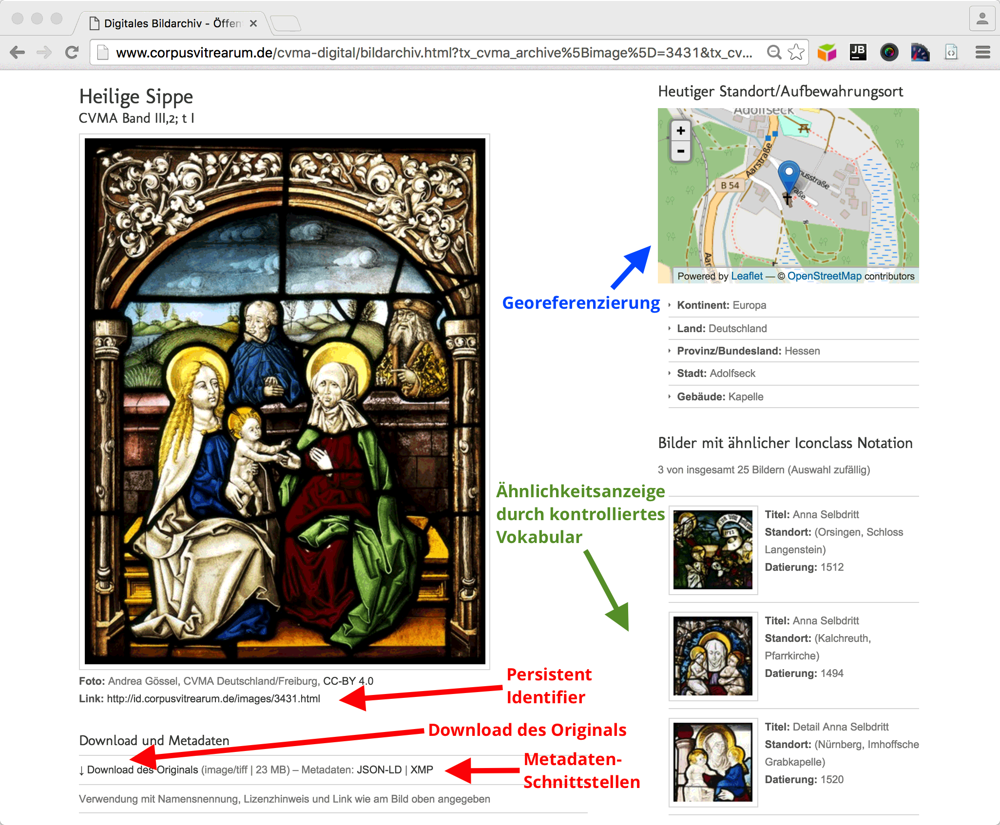
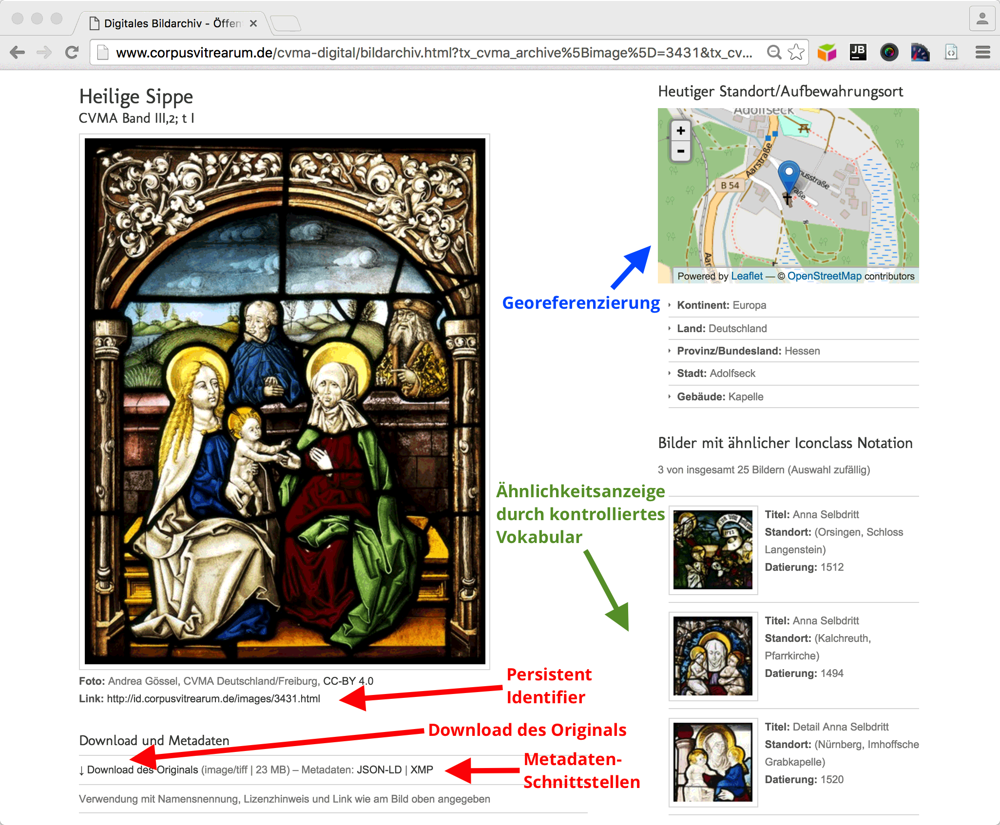

04. April 2017 | Workshop Digitale Raumdarstellungen, Marburg
Semantische Technologien und Fragen des Raums
Beispiele aus den Projekten »Die Deutschen Inschriften« und »Corpus Vitrearum Medii Aevi«
Slides: https://metacontext.github.io/2017-ws-deckenmalerei/
Torsten Schrade, Mainz |
 @digicademy |
@digicademy |
 digicademy |
CC-BY 4.0
digicademy |
CC-BY 4.0
Gliederung
- Das Semantic Web und Linked Open Data
- Raumzeitliche Analysen im Corpus Vitrearum Medii Aevi
- Die Deutschen Inschriften und das Projekt Inschriften im Bezugssystem des Raumes
- Raumzeitliche Analysen auf dem jüdischen Gedenkfriedhof in Mainz
01
Grundlagen
Das Semantic Web und Linked Open Data
Fragestellungen
Mögliche Analysen mit Hilfe von Semantic Web-Technologien
- Glasmalerei: Welche Motive treten zu bestimmten Zeiten an bestimmten Standorten auf?
- Epigraphik: In welchem semantischen Bezug stehen Objekte an einem bestimmten Standort?
- Epigraphik: Gibt es Muster in der Verteilung von Objekten zu bestimmten Zeiten an bestimmten Orten?
Prinzipien
Offene und verlinkte Daten
- Tim Berners-Lee: "The Semantic Web is an extension of the current web in which information is given well-defined meaning, better enabling computers and people to work in cooperation" (Quelle)
- Das "Fife-Star" LOD Prinzip von Berners-Lee: (Quelle)
- ★ Stelle Daten im Web unter einer offenen Lizenz bereit. Das Format ist dabei egal
- ★★ Stelle Daten in einem strukturierten Format bereit
- ★★★ Verwende offene, nicht proprietäre Formate
- ★★★★ Verwende URIs um Dinge zu bezeichnen
- ★★★★★ Verlinke deine Daten mit anderen Daten um Kontexte herzustellen
Nachnutzung
LOD als Nachnutzungsformat für Fachdaten
Fachdaten und/oder Metadaten zu diesen Fachdaten
als LOD bereitzustellen ermöglicht ...
- ... es Dritten, meine digitalen Ressourcen zu finden.
- ... einen freien, strukturierten und maschinenlesbaren Zugriff (ggf. zu eigenen Analysezwecken).
- ... eine standardisierte Bereitstellung der Informationen nach W3C- und ISO-Standards.
- ... die Daten in einen größeren Kontext zu stellen und Datensilos somit aufzulösen.
Und zwar ohne Kontrollverlust über die eigenen Daten und deren Qualität!
Basis
Das Triple - hier ein epigraphisches Beispiel
<epidat:Grabstein> <a> <crm:E18_Physical_Thing> ;
<owltime:xsdDateTime> "1119-05-18" ;
<crm:P1_is_identified_by> <crm:E44_Place_Appelation> .
<crm:E44_Place_Appelation> <crm:P87_is_identified_by> <crm:E47_Spatial_Coordinates> .
<crm:E47_Spatial_Coordinates> <crm:P3_has_note> "50.004933 8.249554" .
- Subjekt
- Prädikat
- Objekt
- <...> = URIs, "..." = Literale
Grundbegriffe
Vokabulare und Ontologien
- Ontologien modellieren Begriffe bzw. Informationskonzepte und deren jeweilige Beziehungen untereinander
- Geisteswissenschaftliche Informationskonzepte können bspw. sein:
- Personen und deren Familienbeziehungen untereinander
- Ereignisse und deren Auswirkungen
- Kunstwerke bzw. Artefakte, deren Enstehung und Eigenschaften
- ... etc.
-
Hilfreiche Ontologien für die Geistes- und Kulturwissenschaften sind u.a.:
- FOAF (Personen)
- REL (Beziehungen zwischen Personen)
- BIO (Eigenschaften von Personen)
- CIDOC-CRM bzw. Erlangen-CRM (Kulturelles Erbe)
- ... und viele viele Weitere. Ontologien finden: http://prefix.cc/
Das CIDOC-CRM
Eine Ontologie für Objekte des kulturellen Erbes

Gute Übersicht: Erlangen CRM/OWL Implementierung
02
Fallbeispiel I
Raumzeitliche Analysen im Corpus Vitrearum Medii Aevi
Das Digitale Bildarchiv des CVMA
Einige Funktionalitäten im Überblick

 

- Hochauflösende TIFF-Bilder zum freien Download (CC-BY)
- Metadaten eingebettet als XMP (ISO-Standard)
- Inhaltliche Erschließung mit kontrollierem Vokabular (ICONCLASS)
- REST-Schnittstellen für Metadaten in XMP und JSON-LD (Semantic Web)
Erfassungsworkflow
Systemneutrale Bild & Metadaten


Beispieldaten
XMP Output
<rdf:Description rdf:about="http://id.corpusvitrearum.de/images/2622">
[...]
<cvma:IconclassNotation>11G31</cvma:IconclassNotation>
<cvma:IconclassDescription>
der Erzengel Michael kämpft gegen den Drachen (Teufel, Satan)
</cvma:IconclassDescription>
[...]
<cvma:AgeDeterminationStart>1210-01-01</cvma:AgeDeterminationStart>
<cvma:AgeDeterminationEnd>1260-12-31</cvma:AgeDeterminationEnd>
[...]
<exif:GPSLatitude>49.4971</exif:GPSLatitude>
<exif:GPSLongitude>11.389811111111</exif:GPSLongitude>
</rdf:Description>
CVMA - Stufe 01
CIDOC und SKOS Klassen, dcterms
CVMA - Stufe 02
Verbindung zu Iconclass
CVMA - Stufe 03
Ikonographisch ähnliche Ressourcen via Europeana
Raumzeitliche Visualisierungen
Bspw. mit Palladio
03
Fallbeispiel II
Die Deutschen Inschriften und das Projekt Inschriften im Bezugssystem des Raumes
Epigraphische Plattform
Einige Funktionalitäten im Überblick


- 42 Inschriftenbände bzw. -bestände mit ca. 17.000 Katalognummern und 18.000 Abbildungen
- Flexible XML Workflows zur Überführung der Banddaten in die Applikation
- Persistente Referenzierung aller Artikel mittels URN der Deutschen Nationalbibliothek
- Standardkonforme Ausgabe der Kataloartikel als TEI/EpiDoc via REST-Interface
BMBF Projekt (2012-2015)
Inschriften im Bezugssystem des Raumes


- Verbindung von Raumdaten (Terrestrisches Laserscanning) mit Fachdaten (RDF) mit dem Ziel neuer Analysemöglichkeiten
- Modulare Architektur, gekoppelt über REST-basierte Schnittstellen
- Webbasiertes Werkzeug zur Erfassung und semantischen Verknüpfung von Raumgeometrien in der Punktwolke (Generic Viewer)
- Webservice zum Harvesting und zur Extraktion semantischer Statements aus XML-basierten Fachdaten (XTriples)
Generic Viewer
Funktionen

Ausprobieren:
Referenzstudien
Liebfrauenkirche Oberwesel
Sichtbarkeit der Bauinschrift

Petrus Lutern / Martha-Altar

04
Fallbeispiel III
Raumzeitliche Analysen auf dem jüdischen Gedenkfriedhof in Mainz
Epidat
Plattform für Jüdische Epigraphik
- 176 digitale Editionen mit ca. 32.000 Grabinschriften und ca. 60.000 Bilddateien
- Maschinenlesbare Daten in TEI/Epidoc-XML über eine REST-Schnittstelle
- Gemeinsame Fallstudie der Projekte IBR und RIR (Relationen im Raum)
- Weitere Forschungsarbeiten gerade innerhalb von DARIAH in Cluster 6 (Semantische Annotationen)

{kind=link}
{kind=link}
{kind=link}
{kind=link}
{kind=link}
{kind=link}
{kind=link}
{kind=link}
{kind=link}
{kind=link}
{kind=link}
{kind=link}
{kind=link}
{kind=link}
{kind=link}
{kind=link}
{kind=link}
Analysemöglichkeiten
Lageverteilung der Gräber von Männern und Frauen
{kind=link}
{kind=link}
F I N I S
Vielen Dank für Ihre Aufmerksamkeit
Links & Software
Links
- GenericViewer Demo
- XTriples Webservice
- Slides: Geisteswissenschaftliche Fachdaten im Semantic Web
- Slides: CIDOC-CRM epigraphischer Fachdaten
Software
- Impress.js (Präsentation)
- jQuery (Animationen)
- Unite Gallery (Bildergallerien)
- Magnific Popup (Lightbox)
- Chartist (Diagramme)
- Skeleton CSS (CSS Boilerplate)
Download
- https://github.com/metacontext/2017-ws-deckenmalerei
- License: CC-BY 4.0, Torsten Schrade